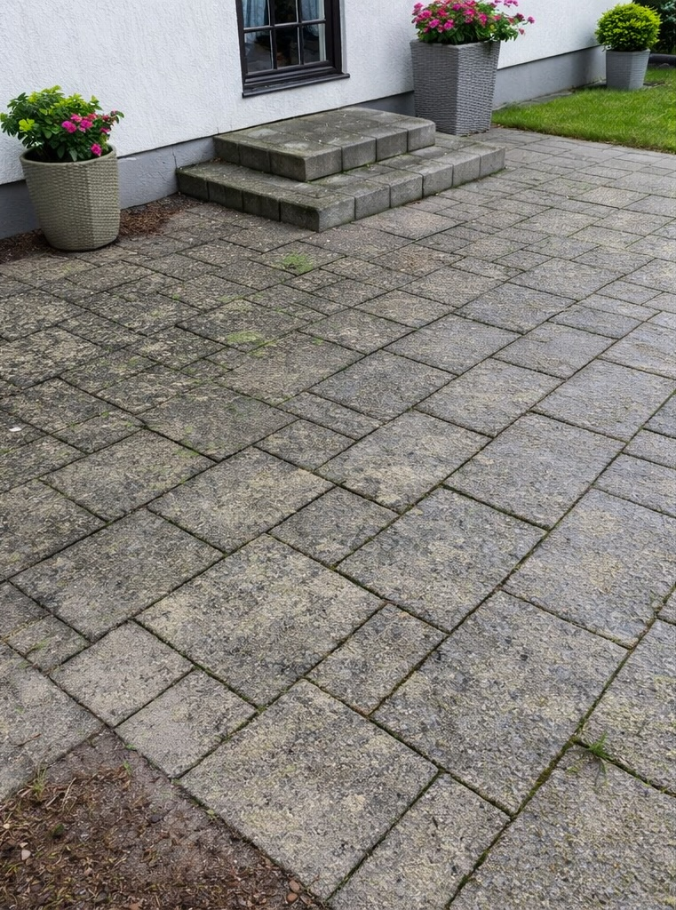
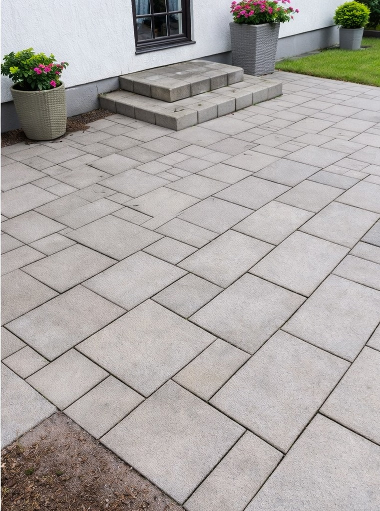
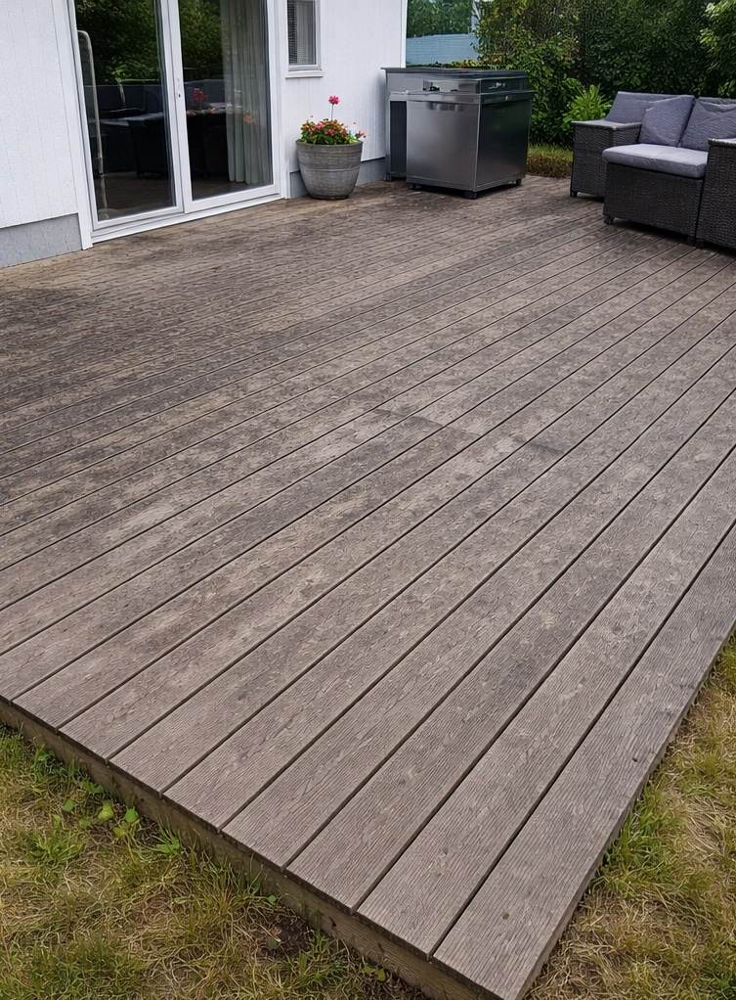
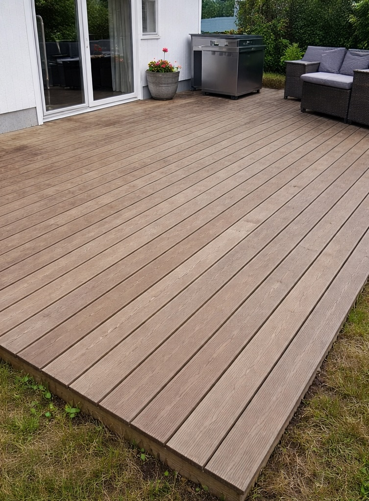

Stentvätt
Vi rengör marksten, uppfarter, stenmur och uteplatser från smuts, alger och påväxt.
Sten & altantvätt med impregnering
Vi använder rätt metod för varje yta – för bästa möjliga resultat utan att skada materialet.
Få gratis offert
Skicka några rader om ytan du vill ha hjälp med så återkommer vi snabbt. Vi återkommer oftast inom 24 timmar.
Tar mindre än 1 minut
Tjänster
Stentvätt och altantvätt är effektiva metoder för att få bort smuts, alger och påväxt från uteytor. Med rätt utrustning och anpassad metod kan ytorna bli som nya igen utan att skadas. Vi anpassar alltid arbetet efter underlaget för att få ett jämnt och hållbart resultat.
Vi rengör marksten, uppfarter, stenmur och uteplatser från smuts, alger och påväxt.
Skyddar ytan mot vatten, smuts och mossa, håller längre och ser bättre ut.
Skonsam rengöring av träaltaner som återställer färg och gör den fräsch.
Behandling som skyddar träet och förlänger livslängden.
Förebygger ny påväxt och håller ytor rena längre.
Från första bedömning till färdigt resultat – enkelt, tydligt och professionellt.
Vi går igenom ytan och återkommer med en tydlig offert utifrån skick, storlek och behov.
Vi rengör marksten, stenmur och altan med rätt utrustning och anpassad metod för bästa möjliga resultat.
Vid behov behandlas ytan för att minska ny påväxt och förlänga effekten av rengöringen.
Impregnering hjälper stenen att stå emot vatten, smuts och påväxt under längre tid.
Före & efter

Före
EfterSmutsig och missfärgad sten blev som ny.

Före
EfterGrå och sliten altan fick tillbaka sitt utseende.
Omdömen
“Otrolig skillnad på vår uppfart, som ny igen!”
Kund, Borlänge“Snabbt, enkelt och riktigt bra resultat.”
Kund, Falun“Proffsigt bemötande och tydlig offert.”
Kund, LeksandAltantvätt i Falun
Vi hjälper villaägare i Falun att tvätta träaltaner på ett skonsamt sätt som lyfter både färg och helhetsintryck. Målet är att få altanen att kännas fräsch igen utan att skada träytan.
Om altanen blivit grå, smutsig eller fått beläggningar av väder och användning kan en professionell altantvätt göra stor skillnad. Vid behov erbjuder vi även behandling som hjälper träet att hålla sig fint längre.
Om oss
Vi hjälper villaägare att få sina uteplatser att se nya ut igen. Med rätt utrustning, effektiva metoder och fokus på resultat levererar vi jobb som håller över tid.
Vi utför stentvätt och altantvätt i Dalarna och närliggande områden.
Läs mer om våra tjänster: stentvätt och altantvätt.
Vi är ett företag som erbjuder stentvätt och altantvätt för villaägare som vill få sina uteytor rena och hållbara över tid.
Behöver du hjälp med stentvätt eller altantvätt? Kontakta oss för en kostnadsfri offert.
Boka kostnadsfri offert